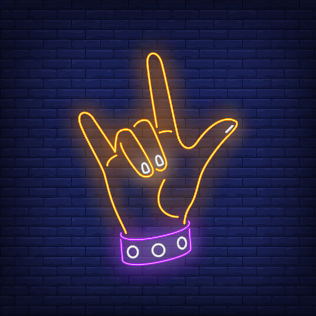

PopPop music is the genre of popular music that produces the most hits. Songs that become hits almost always share certain features that are sometimes called the pop-music formula. They have a good rhythm, a catchy melody, and are easy to remember and sing along to. |

FolkFolk is a term used to describe all sorts of musical, oral and cultural traditions from specific regions and societies around the world. Folk comes from the German word ‘volk’ meaning ‘the people’ and folk music is often thought of as being the music belonging to ‘the people’. |
Hip HopHip-Hop music, also known as rap music, is a musical genre consisting of a stylized rhythmic music originally created by DJs isolating the percussion breaks of popular songs. Hip-Hop music commonly accompanies rapping, a rhythmic and rhyming speech that is chanted. |

RockRock music is a form of popular music that evolved from rock and roll and pop music during the mid and late 1960s. Harsher and often self-consciously more serious than its predecessors, it was initially characterized by musical experimentation and drug-related or anti-establishment lyrics. |
Heavy MetalHeavy metal is a loud, aggressive style of rock music. Heavy metal songs are loud and powerful-sounding, and have strong rhythms that are repeated. |

R&BR&B stands for Rhythm and Blues. It is music that is rhythmic and has the soulful achings of the blues, characterized by a strong backbeat and repeated variations on syncopated instrumental phrases. |

ClassicalClassical music is a very general term which normally refers to the standard music of countries in the western world. It is music that has been composed by musicians who are trained in the art of writing music (composing) and written down in music notation so that other musicians can play it. |

CountryCountry music is a style and genre of largely string-accompanied American popular music having roots in the folk music of the Southeast and cowboy music of the West, usually vocalized in simple form and harmony, and typified by melancholy ballads accompanied by acoustic instruments. |

EDMEDM stands for electronic dance music, also known as dance music, club music, or simply dance, is a broad range of percussive electronic music genres made largely for nightclubs, raves, and festivals. There is no classical instruments involved rather it is maximum filled with electronics. |

JazzJazz music is a broad style of music characterized by complex harmony, syncopated rhythms, and a heavy emphasis on improvisation. |
To listen to different genres, click on the video below.Source: Youtube |
Explore the various genres here.Link: Every Noise at Once |